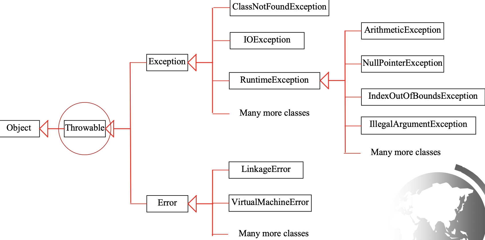
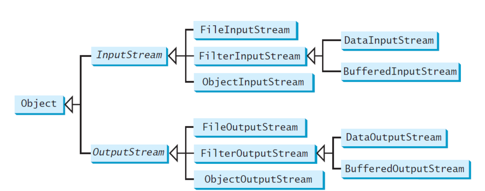
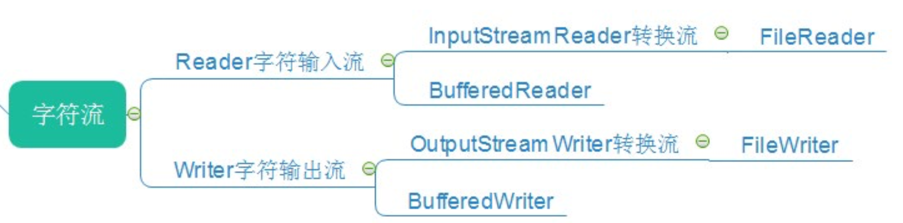
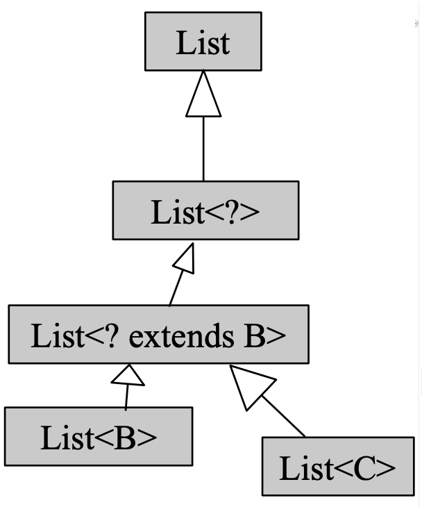
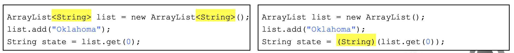
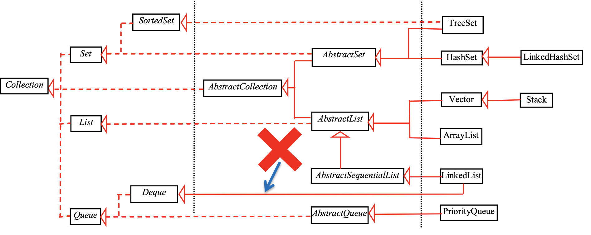
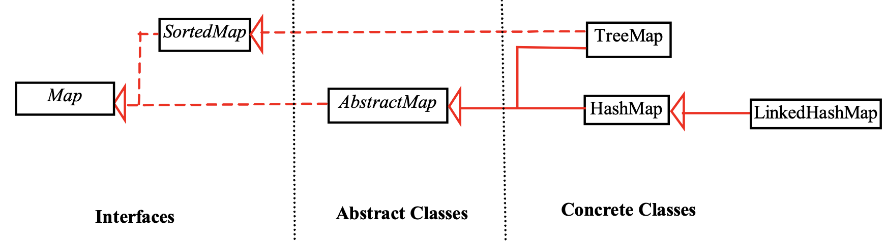
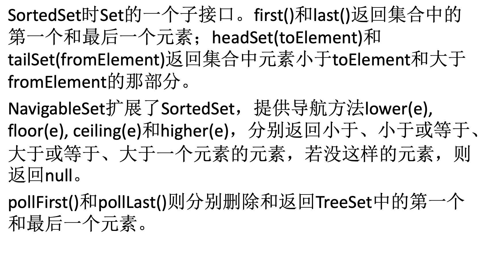
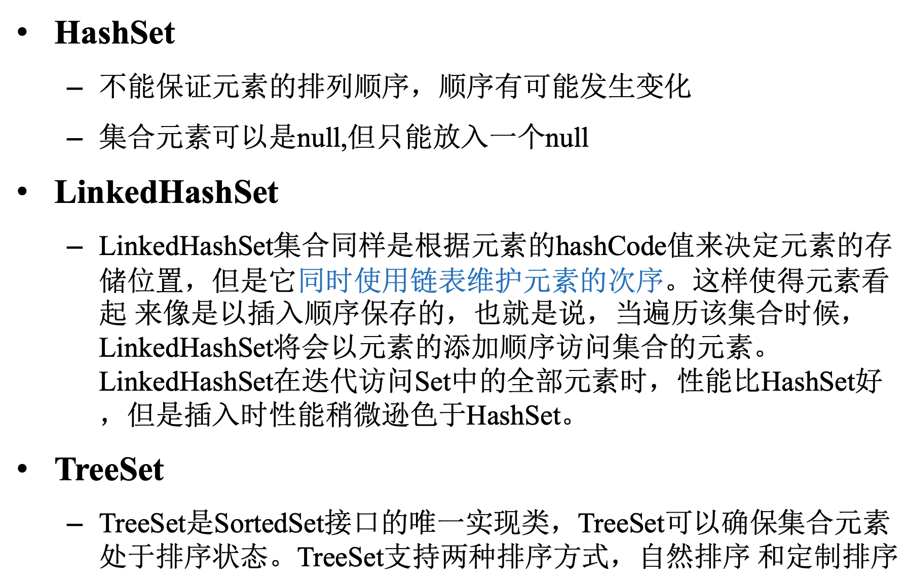
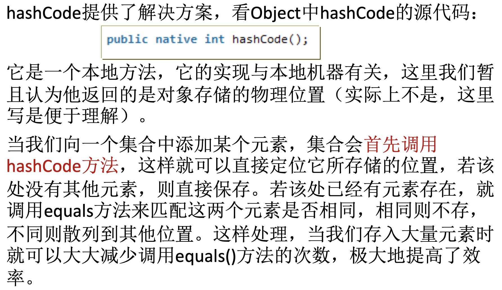

Java应用技术3：高级语法
Java应用技术3：高级语法特性
4. Java高级语法特性
4.1 异常处理
Java中的异常类型
- 注意异常和错误的区别，系统错误是JVM抛出的，异常是由程序引起的，可以被检测出来

异常类型
- Unchecked Exceptions 不可恢复的逻辑错误，包括RuntimeException和Error
- 比如NullPointerException和IndexOutOfBoundsException
- Java不需要对unchecked exceptions进行检查
- checked exceptions 需要进行catch
- Unchecked Exceptions 不可恢复的逻辑错误，包括RuntimeException和Error
Declaring Exceptions 方法需要声明检查的异常的种类，关键字为throws
Throwing Exceptions
- 当发现了错误类型的时候可以创建一个合适的错误类型将其抛出
- 语法是
throw new TheException() - try-catch语句
1
2
3
4
5
6
7
8
9
10
11
12try{
statements;//Statementsthatmaythrowexceptions
}
catch(Exception1 exVar1){
handler for exception1;
}
catch(Exception2 exVar2){
handler for exception2;
}
catch(ExceptionN exVar3){
handlertry{
statements;//Statementsthatmaythrowexceptions
}
catch(Exception1 exVar1){
handler for exception1;
}
catch(Exception2 exVar2){
handler for exception2;
}
catch(ExceptionN exVar3){
handler for exceptionN;
}- tyr-catch语句块中可以加入finally子句，不管有没有找到错误都会被执行
- 抛出异常之后如果没有finally就不会再往下执行，有finally的时候抛出异常之后还会执行finally中的语句
Java的异常检查使用规范
- 不要忽略check exception：捕获就必须要处理
- 不要捕获unchecked exception
- 不要一次捕获所有的异常
- 使用finally语句块释放资源，但是final块不能抛出异常
- 抛出自定义异常异常时带上原始异常信息
- 打印异常的时候带上异常堆栈
- 不要同时使用异常机制和返回值
- try不要太庞大，不然代码的可读性会降低
- 守护线程中需要catch runtime exception
4.2 Assertion 断言
包含一个在程序运行过程中一定是真的布尔表达式，用
assert assertion进行定义- 当断言被创建的时候，Java会计算这个表达式，如果结果是false就会抛出AssertionsError这个异常
- AssertionError有多种构造函数，用于匹配message的data type
1
2
3
4
5
6
7
8
9
10public class AssertionDemo {
public static void main(String[] args) {
int i; int sum = 0;
for (i = 0; i < 10; i++) {
sum += i;
}
assert i == 10;
assert sum > 10 && sum < 5 * 10 :public class AssertionDemo {
public static void main(String[] args) {
int i; int sum = 0;
for (i = 0; i < 10; i++) {
sum += i;
}
assert i == 10;
assert sum > 10 && sum < 5 * 10 : "sum is " + sum;
}
}不要在public的方法中使用assertion而应该使用exception handling
4.3 文本读写
File 类：一个由文件名和路径组成的包装类，提供了一系列文件信息和修改操作
- 不包含读写文件内容的方法
- 文件读写需要Scanner和PrintWriter
PrintWriter 用于写入文件
- 提供了一系列重载的print和println方法
- 构造函数需要文件名作为变量，可以指定编码方式，比如UTF-8
- Scanner 用于读文件
- 初始化之后和标准输入一样使用nextXXX来读写
- Scanner的构造方式
- 错误方式
Scanner in = new Scanner("file.txt");构造了一个带字符串参数的Scanner - 正确方式
Scanner in = new Scanner(new File("file.txt"), "UTF-8");- 需要用File对象进行构造
- 错误方式
- URL类：从web中读取信息
- 构造方式
URL url = new URL("www.xxxxxxx"); - 完成构造之后可以用openStream打开一个输入流，用Scanner进行读取
Scanner input = new Scanner(url.openStream);
- 构造方式
4.4 二进制读写
文本读写是人能看懂的，二进制读写是机器可以看懂的，文本读写事实上是需要编码和解码的，但是二进制读写不需要编解码二可以直接被机器识别
Java通过输入输出流的形式来进行二进制文件的读写，二进制读写的一系列类的关系如下：

- 其中File的输入输出流需要一个文件作为读写的对象
- Filter的输入输出流不仅可以读写二进制字符，也可以将int，double等类型的转化成二进制字符进行读写
- 对于string类型，Java使用的是2个字节的Unicode编码，ASCII编码是Unicode的子集，String中存储的实际上是文字的Unicode序列
- 读写的流水线：外部文件—文件输入流—数据输入流—数据读入进行操作，要写的数据—数据输出流—文件输出流—外部文件
- 对象读写流：直接读入一个对象
序列化和反序列化：可以被写入输入输出流的对象被称为是可序列化的。
- 实现Serializable的接口，可以进行对象的序列化和反序列化
- 序列化后的对象不需要再次调用 构造器重新生成，但是在实际中，我们会希望对象的某一部分不需要被 序列化，或者说一个对象被还原之后，其内部的某些子对象需要重新创 建，从而不必将该子对象序列化
- 反序列化之后得到的对象和原来的不是同一个，因此是深拷贝
高级的文本I/O

4.5 Generics 泛型
- 是一种对变量类型进行参数化的功能，类似于C++中的模板
- 优点是能在编译期就发现一些错误而不是运行时
- 一个泛型类或者方法可以声明类名和函数名作为变量
4.5.1 泛型方法
泛型方法的类型参数声明要卸载返回值类型前面，用尖括号括起来，比如
public static <E> void printArray(E[] input);- 类型参数可以有多个参数，有逗号隔开，类型参数可以被用来声明返回值类型
- 有界限的类型参数：可以让类型参数有一定的范围
- 用extends关键字+类型的上界来控制类型的范围
- 比如
<T extends Comparable<T>>表示T必须是可以比较大小的类型
- JDK7之后后面一个类型可以省略，由Java编译器自己推断
判断函数中的范型参数能否被接受：画范型的继承关系，比如下面这样：
- 这张图中，上层的可以容纳下层的对象

4.5.2 泛型类
类型参数的声明添加在类名的后面
参数化类型没有实际类型参数的继承关系
- 比如
List<Integer> list = new List<Object>会编译错误，把两个参数类型反过来也是编译错误 - 泛型的继承关系需要通过通配符
- 使用？代替具体类型参数，比如List<?>可以代表所有具体类型List的父类
- 比如
List<? extends Number>表示参数的泛型上限为Number类型 List<? super Number>表示参数的泛型下限为Number类型
- 比如
不允许用泛型类型来创建泛型数组
范型的实现方式：
- 范型使用一种叫做类型擦除的方法来实现，编译器编译的时候使用范型类型来编译代码，随后将其删除，因此范型信息在运行时是不可知的，这个方法使得范型可以向后兼容旧代码。

- 泛型类的所有实例都有相同的运行时类，所以泛型类的静态变量和方法是被它的所有实例共享的。所以在静态方法、数据域或初始化语句中，为了类而引用泛型参数是非法的
4.6 Collection 框架
Java的一系列范型容器，主要支持的类型是集合、列表和映射
其中Set和List是Collection接口的子接口，set是内容无序的，而list是有序的

而Map是一种key-value的映射

hashcode的使用方式：在接口中定义的hashcode是里面所有元素的映射，可以通过维护hashcode来方便对象之间进行的比较，比如equals等方法，只需要比较hashcode就可以
LinkedHashSet相比普通的HashSet，也使用hashcode来决定元素的存储位置，并用链表维护元素的顺序，所以性能比HashSet要差



迭代器陷阱：迭代过程中不能发生结构上的变化，比如插入删除，否则会出问题
- 因为迭代器是根据位置来进行的，会维护索引相关的数据，这一部分数据不能发生变化，否则会出问题
- Collection还有Vector、Stack、Queue、PriorityQueue等list结构，map可以
枚举集合和枚举map
- EnumSet提供了非常方便的方法来创建枚举集合，枚举集合中的所有元素必须都来自于单个枚举类型